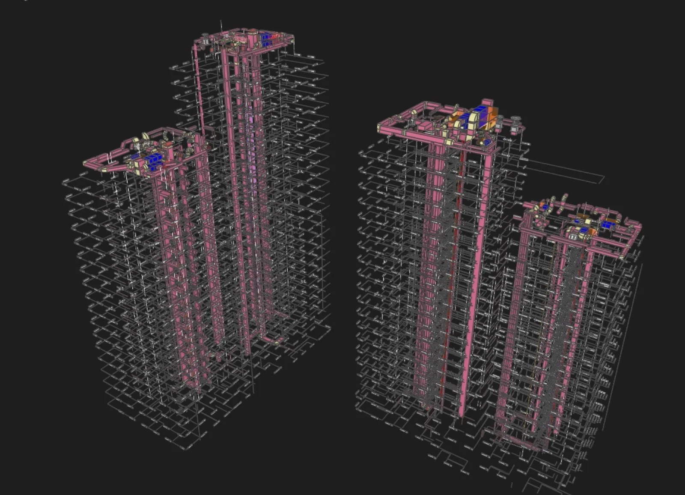

Шаблоны Revit как основа автоматизации и AI
Единые шаблоны, параметры и правила именования позволяют строить проверяемые процессы и подключать умные инструменты.

Шаблон Revit — это не просто стартовый файл. Это фундамент будущей автоматизации: параметры, виды, спецификации, семейства, правила оформления и структура данных.
Если шаблоны разные, AI и скрипты будут получать неоднородные данные. Поэтому стандартизация — обязательный этап перед масштабированием BIM-инструментов.
Правильный шаблон снижает ручную работу, упрощает контроль качества и делает данные пригодными для дашбордов, баз данных и LLM-ассистентов.